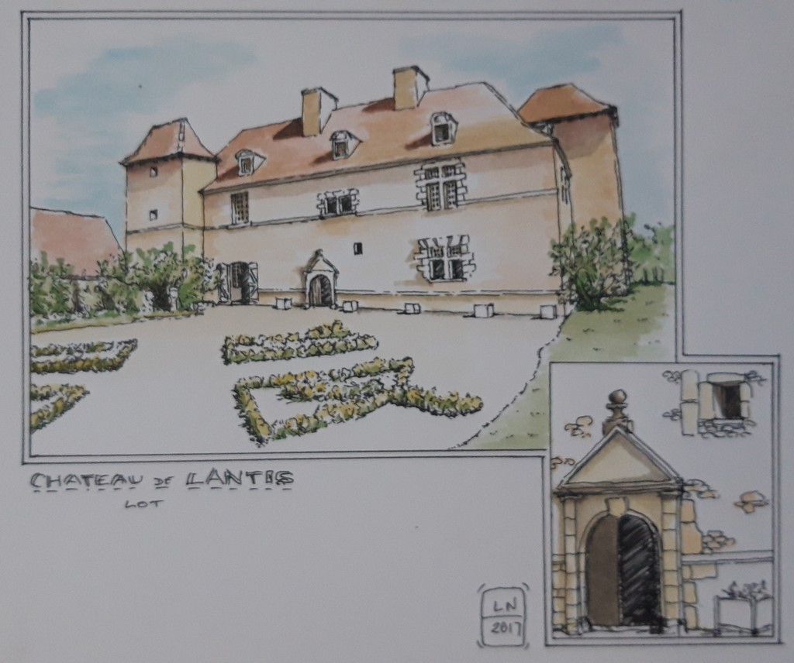
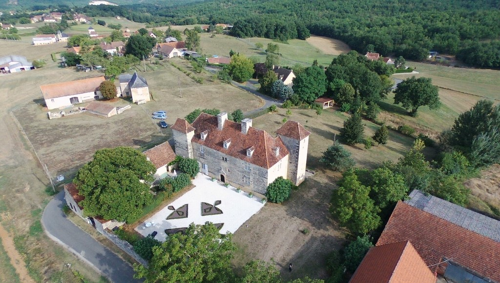

Édification de la forteresse face aux positions anglaises pendant la guerre de Cent Ans.
Création de la porte d'honneur sculptée et du dallage en étoile d'escarboucle unique en Europe.
Sauvegarde intégrale par la famille Barbier-Damiette, récompensée par le prix national VMF.
Deux gîtes de caractère, une suite seigneuriale et privatisation complète pour mariages jusqu'à 150 convives.
De la forteresse frontalière au dépotoir communal
Mentionné dans les archives du Lot dès 1460, le Château de Lantis constituait un point d'appui défensif stratégique au sortir de la guerre de Cent Ans. Construit avec des murs épais, une salle des gardes et un cul de basse fosse, le logis est transformé vers 1625 en élégante résidence Renaissance dotée de fenêtres à meneaux et d'un dallage en escarboucle (en étoile) considéré comme exceptionnel par les historiens d'art.
Après la Révolution française, le domaine est progressivement abandonné. Durant plus d'un siècle, ses pierres sont pillées et les ruines sont utilisées comme dépotoir communal, jusqu'à disparaître totalement sous plusieurs mètres de gravats et une végétation impénétrable.
1993 : Le miracle des fondations retrouvées
Au début des années 1990, Françoise et Michel Barbier-Damiette découvrent les premiers vestiges en creusant sur leur propriété. Commence alors une aventure humaine hors du commun : quarante années de déblaiement manuel, de remontage de voûtes effondrées, de taille de pierre et de replantation des jardins de buis en pointe de diamant. Le château est aujourd'hui classé Monument Historique et labellisé par les Vieilles Maisons Françaises (VMF).




Les Printanières de Lantis
Chasse aux œufs géante dans les jardins Renaissance, théâtre de marionnettes traditionnel, jeu de l'oie grandeur nature et récompenses pour tous les enfants. De 15h à 18h.
Visites Costumées aux Chandelles (21h00)
Chaque mardi soir à la tombée de la nuit, explorez la forteresse entièrement éclairée à la lueur des bougies et animée par les propriétaires en costumes d'époque. Une immersion féerique inoubliable pour petits et grands.
Journées du Petit Patrimoine de Pays
Découverte des éléments agricoles et vernaculaires restaurés du domaine : le four à pain du XIXᵉ siècle, le puits citerne du XVIIIᵉ siècle et le corps de ferme de 1820.
Théâtre en Plein Air : « Au-delà des Montagnes Bleues »
Représentation théâtrale inédite par la troupe itinérante La Passerelle, donnée dans le décor naturel et les pierres de la cour d'honneur du château à 18h00.
« Léo Ferré en Quercy » par Colette Brogniart
Évocation littéraire et musicale du séjour quercynois de Léo Ferré dans la Salle des Gardes du château à 17h30, suivie d'un cocktail offert aux participants.
Soirée Blanche & Récital de Piano aux Chandelles
Récital du pianiste Guillaume Wilmot dans la cour d'honneur sous les étoiles. Tenue blanche recommandée. Début à 20h00 précises.
POUDLENTIS : L'Académie des Jeunes Sorciers
Après-midi festif d'Halloween de 14h à 18h avec ateliers magiques, énigmes dans les souterrains et grand jeu médiéval pour les enfants costumés.
Le Charmant Gîte
Capacité : 4 personnes • 3 épisAménagé dans l'ancienne boulangerie avec son authentique four à pain et la forge du château. Deux chambres douillettes, salon avec poêle, cuisine complète et cour privative ombragée.
La Huchette
Capacité : 4 à 6 personnes • 3 épisSitué dans l'ancien corps de ferme du domaine. Grand volume chaleureux avec poutres quercynoises apparentes, salon spacieux, cuisine équipée et vue dégagée sur les prés et les bois.
La Suite Seigneuriale
Capacité : 2 à 3 personnesDormez dans la forteresse : chambre noble meublée avec cheminée en pierre d'époque, lit à baldaquin, salle d'eau privative et vue sur la cour d'honneur.
Calendrier d'ouverture
| Juillet & Août (Haute Saison) Ouvert tous les jours |
10h00 à 12h00 14h00 à 18h00 |
| Avril, Mai, Juin, Septembre Tous les jours sauf le mardi |
14h00 à 18h00 |
| Groupes & Scolaires (dès 10 pers.) En français ou en anglais |
Toute l'année sur RDV |
| Nocturnes aux Chandelles Mardis soirs d'été |
À 21h00 précises |
Grille tarifaire officielle
| Plein Tarif Adulte Visite guidée des intérieurs et du parc (1h) |
10,00 € |
| Tarif Réduit 12 à 18 ans et étudiants sur justificatif |
8,00 € |
| Enfants de moins de 12 ans Accompagnés d'un adulte |
Gratuit |
| Groupes (à partir de 10 pers.) Accueil personnalisé par les propriétaires |
8,00 € / pers. |
Soutenir la restauration du monument
Participez activement aux chantiers de conservation du château en devenant mécène. Notre campagne avec la plateforme Dartagnans a déjà permis de recréer les jardins de buis en pointe de diamant de la cour d'honneur.
Les prochains projets concernent la réhabilitation de parties hautes de la forteresse et l'enrichissement de l'arboretum d'arbres rares.
À découvrir dans la région
- À pied depuis le château : Hameau historique de Lantis, résurgence de la Croze et sentiers ombragés du rieu de Lantis.
- À moins de 10 km : Grottes préhistoriques de Cougnac à Gourdon, Abbaye Nouvelle de Léobard (XIIIᵉ s.) et Jardin Bourian de Dégagnac.
- À 35 km : Les trésors classés UNESCO : Sarlat-la-Canéda, Cahors et la cité de Rocamadour.
Château de Lantis
Hameau de Lantis
46340 Dégagnac (Lot, Occitanie)
À 25 minutes de Sarlat-la-Canéda et de Gourdon
Accessibilité : rez-de-chaussée et jardins accessibles aux personnes à mobilité réduite.